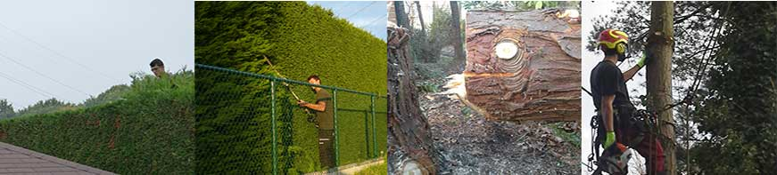

Toggle navigation
Home
(current)
Tuinwerken
Bedrijven
Boomverzorging
Snoeien van bomen
Vellen van gevaarlijke bomen
Standplaats verbetering
Aanplanten van bomen of leibomen
Verplanten van bomen
Kroon- en kluitverankering
Ziekte- en plaagbestrijding
Uitgraven of frezen van stronken
Versnipperen en afvoeren van takken en loof
Interventies voor, tijdens en na storm
Advies
Boomveiligheidsinspecties
Boombescherming op werven
Inventarisatie en beheer planning van boombestanden
ARBOR SERVICE
boomchirurgie en tuinonderhoud
Snoeien van bomen
Vellen van gevaarlijke bomen
Standplaats verbetering
Aanplanten van bomen of leibomen
Verplanten van bomen
Kroon- en kluitverankering
Ziekte- en plaagbestrijding
Uitgraven of frezen van stronken
Versnipperen en afvoeren van takken en loof
Interventies voor, tijdens en na storm
Advies
Boomveiligheidsinspecties
Boombescherming op werven
Inventarisatie en beheer planning van boombestanden
